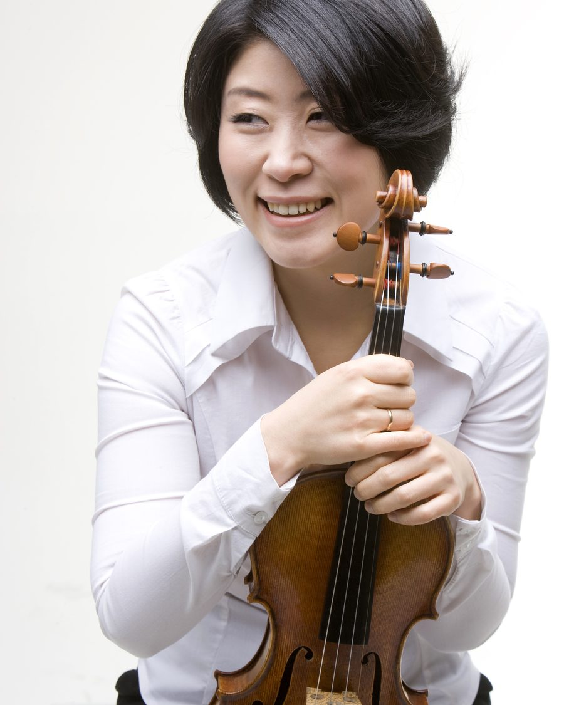

→ 단원 목록으로

바이올린
한경진
악장 · 리더바이올린
주요 약력
- 예원학교 졸업
- 한국예술종합학교 음악원 영재입학 및 예술사 졸업
- 독일 베를린 국립음대 Diplom 졸업
- 독일 라이프치히 국립음대 Konzertexamen(최고연주자과정) 졸업
- 독일 라이프치히 국립음대 Meisterklassenexamen 졸업
- 수원시립교향악단 악장 역임
- Simonoseki 국제콩쿠르, Nuri 국제콩쿠르, 동아음악콩쿠르, KBS신인음악콩쿠르, 부산음악콩쿠르 등 다수 콩쿠르 우승 및 입상
- MDR Philharmonic Orchestra, Jena Philharmonic Orchestra, Istanbul Philharmonic Orchestra, KCO, 서울시향, KBS교향악단, 국립심포니, 강남심포니, 대구시향, 부산시향, 창원시향, 수원시향, 청주시향, 춘천시향, 경산시향 외 다수 오케스트라와 협연
- 현) 경북대학교 교수, KCO(구 바로크합주단) 악장, 대구 비르투오조 챔버 리더, 카이로스 앙상블 단원